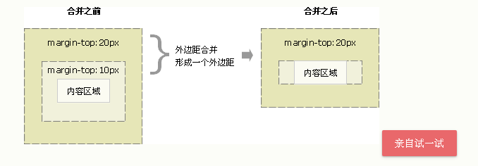

外边距: 围绕在元素边框的空白区域. 设置未变据会在元素外创建额外的 "空白". 接受任何单位. 甚至负值.
margin值可以为 auto. 当为百分比时, 是父元素 width宽 值的百分比.
margin 与 padding一样, 浏览器默认会给其设置值.
由于默认值,不同浏览器有不同的行为. 为了正确显示.请将使用的标签在一开始. margin padding 设置为 0;
三种外边距合并问题:
当两个垂直边距相遇时,他们合并成一个边距.如下图:
当一个元素存在另一个元素中时,子元素的外边距与父元素的外边距合并.取最大值为父元素的外边距.(前提父元素没有设置padding-top, border-top)如下图:

如果一个元素没有宽高(没有内容)那么它的margin上下边距会合并为一个最大值. 当然, 此时上两种合并也会发生. 如下图:
只有在文档流中的块元素的垂直边距才有外边距合并. 行内元素(没有上下边距), 浮动, 绝对定位. 都不会发生合并.
属性
描述
margin
简写属性。在一个声明中设置所有外边距属性。
margin-bottom
设置元素的下外边距。
margin-left
设置元素的左外边距。
margin-right
设置元素的右外边距。
margin-top
设置元素的上外边距。